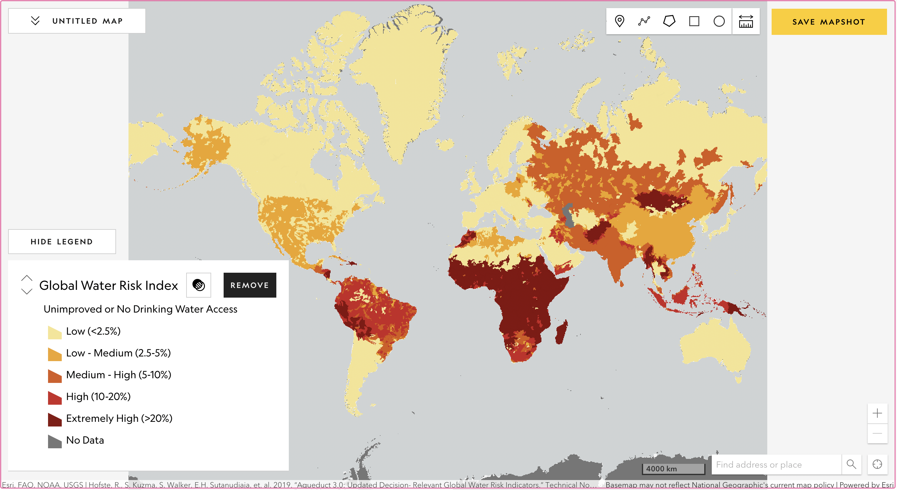
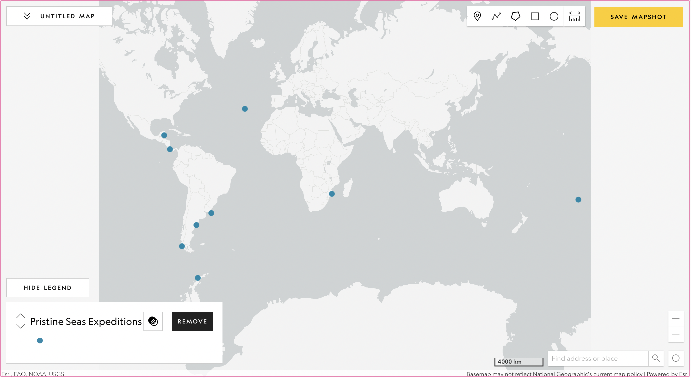
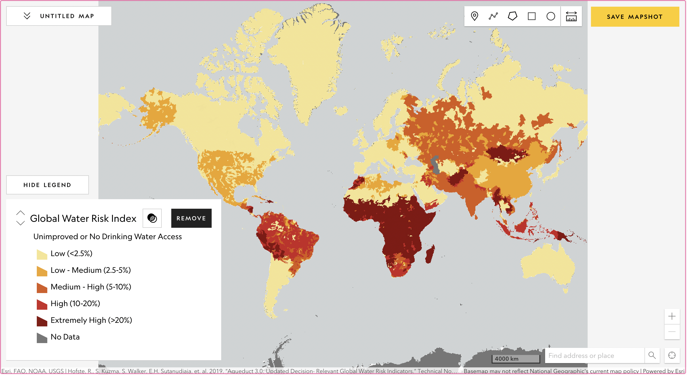
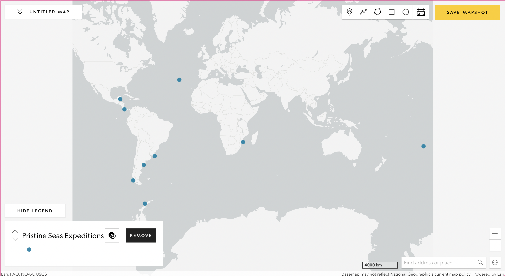

Figure 1. The cartographic communication process,
based on “How do I say what to whom, and is it effective?”
What is Cartographic Process?
Cartographic Process explains how to visualize your data into a thematic map.
As it is represented in the Figure 1 beside,
the process is the "How" in between the Cartographer (I) and the Map (Say).
In here, you need to know about what are the most important steps for making a thematic map.Here is the explanation of those steps:

Figure 2. Data Types
1
Know about your data
As you can see in Figure 2 beside, the type of data can be differentiated to Quantitative and Qualitative.
-Quantitative data
→ the example in thematic map: Population density, Export and Import, The distribution of a specific language Native speakers
-Qualitative data → the example in thematic map: Countries name, Languages spoken in a specific region, Favorite food from a specific area
2
Know about the perception properties
From Figure 3, we know that Bertin defined perception properties of visual variables into 4 categories below:
- Selective: easily separated as an obvious symbol from the group symbol based on the contrast- Associative: easily recognized as a group of symbol despite other differences
- Ordered/Ordinal: easily perceived as a rank or an order of symbols
- Quantitative: able to give estimation of numerical difference between symbols

Figure 3. Bertin's Visual Variables

Figure 4. Visual variables and their syntactics. Figure derived from Bertin (1983), MacEachren (1995), and MacEachren et al. (2012). by Roth (2017)
3
Know what visual variable you need
What is visual variable?
Visual variable is the way where we can control
the symbolization of our data in a map (wiki.gis.com).
There is a strong correlation between the data that we have and the perception properties of visual variables.
(Living Textbook of ITC-University of Twente)In the figure 4, we can see that there are more visual variables and its perception properties. We need to know which visual variable suits to the nature of our data. (Thematic Map Tutor by Köbben, B. (2018))

 


